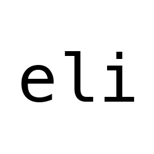

financial coding agent

Any LLM becomes a quant terminal. Fetches real timeseries, writes Python to analyze it, debugs itself until it works. Headlines are just confirmation—the numbers already told you what moved.
Click to copy, then run eli
How It Works
Yahoo Finance + FRED via native Rust. OHLCV, fundamentals, SEC filings, macro indicators.
LLM generates Python for calculations. Executes it. Reads actual output.
Error? Reads traceback, fixes code, retries. Loops until status = DONE.
News via Google RSS. Investigate specific dates after the numbers flag what moved.
Built-In Finance Tools
timeseries
OHLCV candles with flexible range and granularity (1m to 5y)
snapshot
Point-in-time data: price, market cap, shares outstanding, EV
fundamentals
Quarterly income, balance sheet, and cash flow statements
filings
SEC filings (8-K, 10-K, 10-Q) with full text extraction
news
News articles for a specific ticker on a specific date
search
Find tickers by keyword (e.g., "semiconductors", "gold miners")
Why Eli
Remembers the entire conversation. When tokens get high, it automatically self-compacts history to keep the mission on track.
Yahoo + FRED in Rust. Cached locally. No scraping. Single binary.
Price → key days → news/filings by date. No web search. No headlines-first bias.
Generates Python. Executes it. Shows the code. Audit it.
OpenRouter (free demo model), Anthropic, OpenAI, Ollama. Your choice.
Sessions logged to JSONL. Reports saved to eli_research/.
Blog
How open-source Rust tools replace expensive web search. By fetching raw data first, even cheap models (1/100th the cost of Sonnet) can read the news with the numbers in mind.
Once an agent can run code and apply diffs, it stops “answering” and starts debugging. It retries until the math and data pipeline actually work.
Eli doesn’t paste code. It proposes diffs, applies them, and can undo them. That’s how small models ship real software safely.